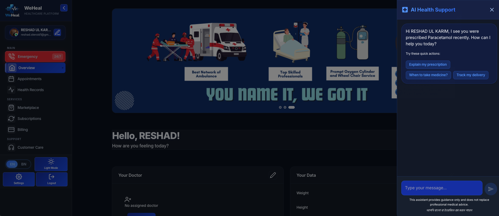

WeHeal — All-in-One Healthcare Platform
WeHeal: an end-to-end MERN telemedicine platform with video consultations, EMR and e-prescriptions, emergency services, and payment/insurance integration.
Follow an appointment
SRS-based workflow
Authored walk-through of the documented pipeline. It shows how the system works, not recorded results.
Overview
This is the original CSE470 Software Requirement Specification (SRS) for WeHeal — the preliminary planning report, kept here as the project's design record. It scopes an all-in-one MERN-stack (MongoDB, Express, React, Node) healthcare web app for a four-person team on an 8–9 week Agile timeline, built around four user roles — patients, doctors, clinic staff, and administrators — with one goal: find care, book it, and see it through (consultation, records, prescription, payment) in a single app, compliant with HIPAA/GDPR data-privacy requirements. The live site at weheal.live has since been upgraded well beyond this preliminary scope; this document reflects the original plan, not the current feature set.
Planned architecture
The specified architecture is a straightforward three-layer MERN split — React for presentation, Express/Node for business logic behind a RESTful API, MongoDB for persistence — chosen for horizontal scalability and a single-language stack across the whole team. OTP-based authentication and role-based access control (RBAC) were specified to gate ten planned feature areas: location-based clinic search, appointment scheduling with real-time doctor availability, WebRTC/Twilio telemedicine calls, EMR and e-prescription management, emergency/ambulance booking, payment and insurance integration, medicine and lab ordering, and a feedback/ratings system — with encryption at rest and in transit, and a 99.9% uptime target, specified as non-functional requirements from the outset.
Scope note
As specified, none of the ten feature areas were optional in the SRS — appointment reschedule/cancel, a virtual queue for walk-in patients, in-app doctor–patient messaging, and a loyalty/referral rewards system were all written into the functional requirements alongside the headline telemedicine and EMR features. What actually shipped is best judged from the live deployment rather than this document; it's included here as the original planning artifact.
Highlights
- Telemedicine
- Video Consultation
- EMR System
Tech stack & key skills
Core tools, methods and skills demonstrated in this project: